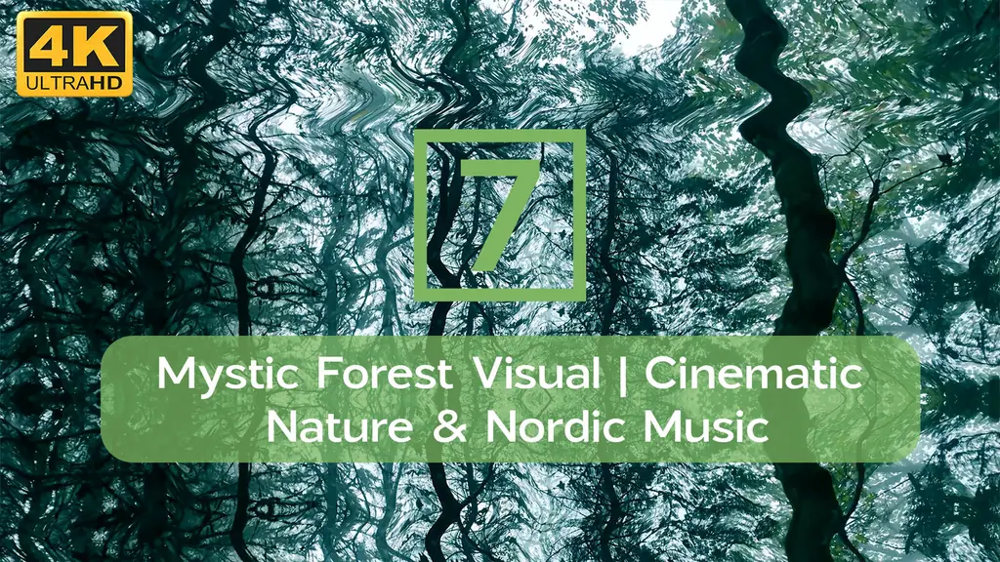
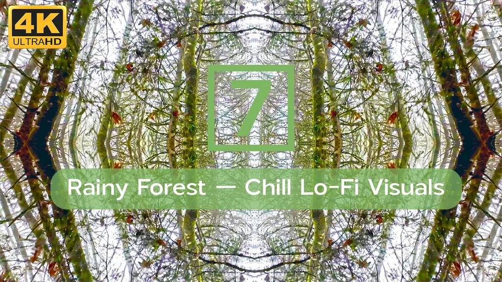
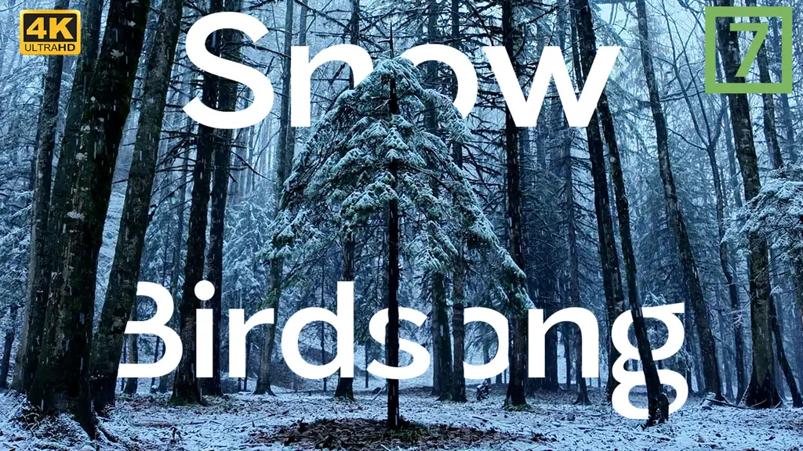
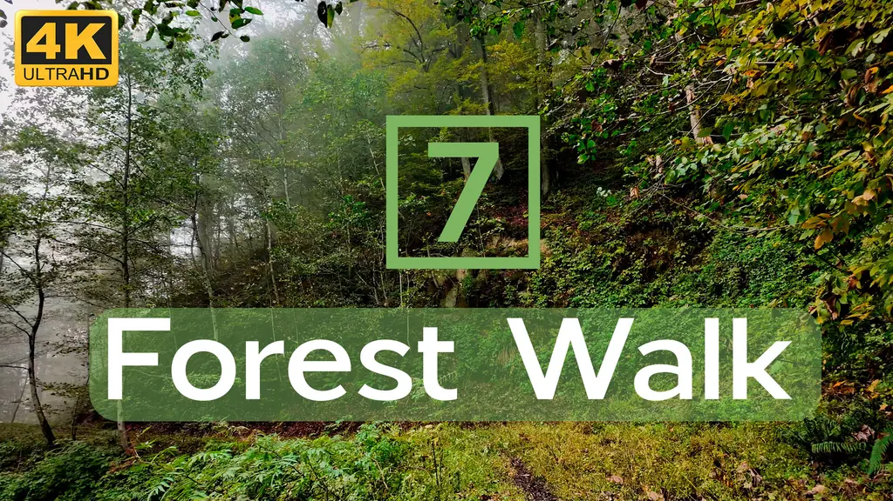
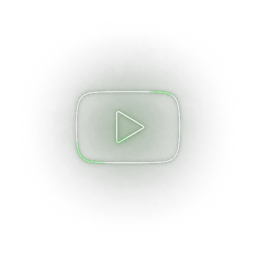
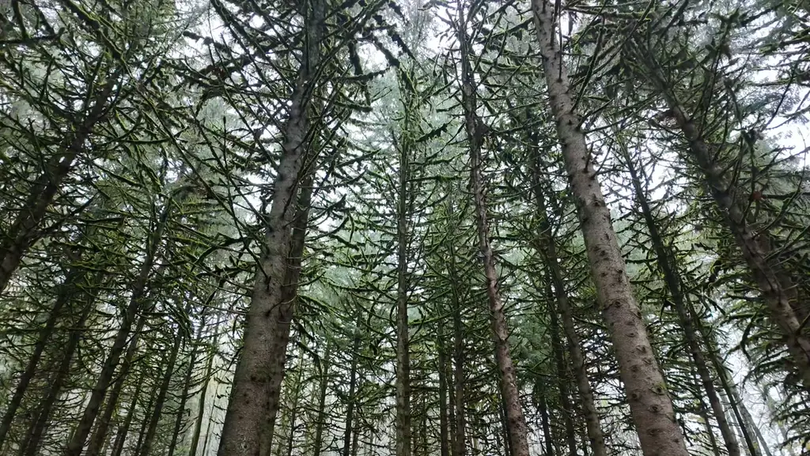

نگاه سینمایی
هر قاب با دقت کادربندی، نورپردازی و ریتم کند انتخاب میشود تا تماشای طبیعت مثل تماشای یک فیلم باشد.

ویژوال سینمایی طبیعت · 4K
7 Natures کانالی است برای کسانی که دنبال آرامشاند. جنگل، باران، برف و صدای طبیعت، همراه با موسیقیهای نرم و نورپردازی سینمایی، برای مطالعه، تمرکز، خواب یا فقط مکث کردن.
دربارهی 7 Natures
ما ویدیوهای طبیعت را مثل یک فیلم سینمایی میسازیم: قابهای آرام، نورهای نرم، حرکتهای بیعجله و صدایی که ذهن را به جنگل میبرد. هر ویدیو با موسیقی یا صدای محیطی مخصوص خودش همراه است، چه موسیقی شمالی و آمبیِنت باشد، چه صدای باران یا آوای پرندگان.
هدف ما ساده است: چند دقیقه آرامش واقعی، با تصویری تمیز و صدایی که واقعاً به آن گوش میدهید.

ویدیوهای منتخب
چند نمونه از ویژوالهایی که تا امروز ساختهایم. روی هر کارت کلیک کنید تا در یوتیوب تماشا کنید.

ویژوال سینمایی طبیعت با موسیقی نوردیک
Cinematic · Nordic
ویژوال لو-فای برای مطالعه و تمرکز در روزهای بارانی
Lo-Fi · Focus
برف، سکوت و صدای پرندگان در دل جنگل زمستانی
Winter · Ambient
قدمزدن آرام در مسیر جنگلی؛ همراه با صدای طبیعت
4K · Walkمجموعههای فصلی
ما ویدیوها را بر اساس فصل دستهبندی میکنیم تا بتوانید دقیقاً همان حالوهوایی را پیدا کنید که امروز لازم دارید.
زمستان ۱۴۰۴
جنگلهای سرد، روزهای برفی و صدای پرندگان؛ برای شبهای آرام و خواب عمیقتر.
بهار ۱۴۰۵
رنگهای تازهی طبیعت، رودخانههای جاری و نورهای نرم صبحگاهی؛ مناسب مطالعه و تمرکز.
بهزودی
ادامهی مجموعهها با لوکیشنها و صداهای تازه. کانال را دنبال کنید تا خبردار شوید.
چرا 7 Natures؟

هر قاب با دقت کادربندی، نورپردازی و ریتم کند انتخاب میشود تا تماشای طبیعت مثل تماشای یک فیلم باشد.
موسیقیهای نوردیک، آمبیِنت و صدای محیط طبیعی؛ ساختهشده برای گوش دادن در بیحوصلگی یا خستگی.

محتوای ساده، بدون ادا و اطوار. فقط طبیعت، موسیقی و چند دقیقه آرامشی که واقعاً لازم دارید.

کانال 7 Natures را در یوتیوب دنبال کنید تا هر ویدیوی تازه را از دست ندهید.
دنبال کردن در یوتیوب